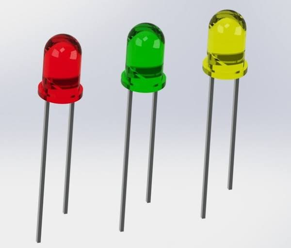

Aplikasi Arduino IDE adalah perangkat lunak yang digunakan untuk menulis, mengedit, dan mengupload kode ke board Arduino. Berikut adalah langkah-langkah instalasinya:
Pilih versi Arduino IDE yang sesuai dengan sistem operasi kamu (Windows, Mac, atau Linux).
Download dan install software tersebut.
Setelah instalasi, buka Arduino IDE dan sambungkan board Arduino ke komputer menggunakan kabel USB.
2. TinkerCAD/UnoArdusim
TinkerCAD adalah aplikasi simulasi berbasis web yang memungkinkan kamu untuk membuat rangkaian elektronik dan menulis kode Arduino tanpa perangkat keras fisik.
UnoArdusim adalah simulator offline untuk Arduino yang membantu kamu menguji kode dan rangkaian secara virtual.
Untuk UnoArdusim, kamu bisa mendownload aplikasi di sini.
3. BreadBoard
Breadboard adalah papan tempat merakit rangkaian elektronik tanpa solder. Komponen-komponen seperti LED, resistor, dan kabel jumper ditempatkan di lubang-lubang breadboard untuk membuat koneksi sementara.
4. Baterai
Baterai digunakan sebagai sumber daya untuk rangkaian Arduino. Baterai biasanya memiliki tegangan 9V atau 12V, tergantung pada kebutuhan proyek.
5. LED

LED (Light Emitting Diode) adalah komponen elektronik yang memancarkan cahaya saat diberikan arus listrik. LED memiliki dua terminal: anoda (positif) dan katoda (negatif). Dalam proyek Arduino, LED biasanya digunakan sebagai indikator.
6. Resistor
Resistor digunakan untuk membatasi arus listrik yang mengalir ke komponen, misalnya ke LED. Resistor mencegah komponen rusak karena terlalu banyak arus. Unit resistansi diukur dalam Ohm (Ω).
7. Kabel Jumper
Kabel jumper digunakan untuk membuat sambungan antara komponen-komponen di breadboard, serta untuk menghubungkan breadboard dengan Arduino. Ada tiga jenis kabel jumper: Male to Male, Male to Female, dan Female to Female.
8. Sensor
Sensor adalah perangkat yang mendeteksi perubahan lingkungan fisik seperti cahaya, suhu, atau tekanan, dan mengubahnya menjadi sinyal listrik. Contoh sensor yang sering digunakan dengan Arduino adalah sensor suhu (DHT11), sensor jarak ultrasonik, dan sensor cahaya (LDR).
9. IoT (Internet of Things)
IoT atau Internet of Things adalah konsep di mana perangkat-perangkat elektronik terhubung ke internet untuk berbagi data dan berkomunikasi secara real-time. Dalam proyek Arduino, IoT memungkinkan perangkat seperti sensor dan aktuator untuk diakses dan dikendalikan secara jarak jauh melalui internet.
Beberapa contoh penerapan IoT dengan Arduino adalah:
Monitoring jarak jauh: Menggunakan sensor suhu dan kelembaban untuk memantau kondisi ruangan dari jarak jauh.
Pengendalian perangkat rumah: Menggunakan relay dan internet untuk menyalakan atau mematikan lampu atau alat rumah tangga lainnya dari jarak jauh.
Untuk menghubungkan Arduino ke internet, kita dapat menggunakan modul seperti ESP8266 atau ESP32, yang mendukung Wi-Fi dan komunikasi nirkabel.